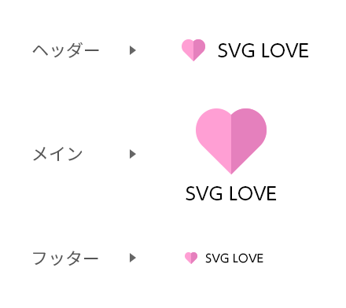
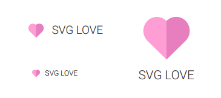
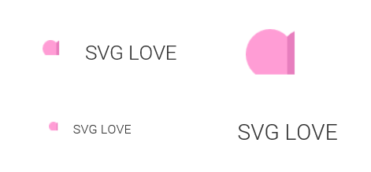

SVGの背景画像を
印刷しようとしたらIEで…
という、解決策の見つかっていない、悲しいお話をします。
こんなデザインが上がってきたとして…

アイコン部分はSVGにしーよお♡
って思うじゃないですか。
実装するじゃないですか。
SVG LOVE
SVG LOVE
サイトが出来上がってから「印刷対応して」
って言われるじゃないですか。
印刷用CSS用意して、各ブラウザで動作確認するじゃないですか。
Chrome良し！ Firefox良し！ Safari良し！

あれっ… IEだけなんかおかしいよ？！

原因は、SVG画像をbackground-imageで指定していたこと。
img要素で使用しているSVG画像は問題ないのです。
.sample {
background-image: url(./images/heart.svg);
background-repeat: no-repeat;
background-position: 0 center;
}
<div class="sample">
SVG LOVE
</div>
いろいろ試してみましたが、
今のところ未解決です。
ふえぇ・・・
どなたか解決方法をご存知ないでしょうか？
そうならないためにできること？
- そもそも印刷対応が必要かどうか、最初に確認したほうがいいですよね
(特にお役所系クライアントは印刷したがる傾向が…) - SVGを使う時は
background-imageでの指定を避ける？ - 代替案としては、疑似要素の
contentプロパティを使うことかなぁ
終わり